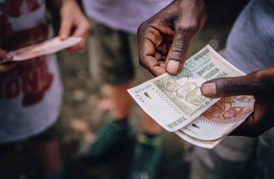

Zimbabwe's Inflation Journey: 2010 - 2026
By Mzimazisi Mabaso
This report analyzes the volatile economic landscape of Zimbabwe. As a native Zimbabwean, I utilized this [FRED dataset](https://fred.stlouisfed.org/series/FPCPITOTLZGZWE) to visualize how political shifts and currency transitions directly impact the cost of living and national stability.
1. Historical Data Visualization

The orange trend line highlights the massive 2020 hyperinflation peak and the subsequent projected stabilization following the 2024 currency reforms.
Political Context: Elections & Leadership
The dramatic spike to 557% in 2020 followed the 2018 General Election. The decision to end the multi-currency era and re-introduce a local unit without sufficient reserves led to a lack of market confidence, causing the rapid devaluation reflected in the data.
2. The ZiG Transition (April 2024)
In April 2024, the Reserve Bank of Zimbabwe (RBZ) introduced the ZiG (Zimbabwe Gold). This currency is backed by a composite basket of foreign exchange and 2.5 tonnes of gold. It represents a major policy pivot intended to anchor the economy and prevent the hyperinflation cycles seen in 2020 and early 2024.

3. Civilian Reality & The Trust Gap

While the [IMF Forecasts](https://fred.stlouisfed.org/series/FPCPITOTLZGZWE) suggest inflation will drop to 12% by 2026, the reality on the ground is governed by public trust. After decades of volatility, many civilians still prefer the US Dollar as a safe haven. The success of the ZiG depends on whether the government can maintain the gold-backing and win back the confidence of the informal market.
Data Summary & IMF Forecasts
| Year | Inflation Rate (%) | Economic Context |
|---|---|---|
| 2010 | 3.02% | Multi-Currency Stability |
| 2020 | 557.20% | Post-Election Currency Collapse |
| 2021 | 98.55% | Policy "Dip" (USD Legalized) |